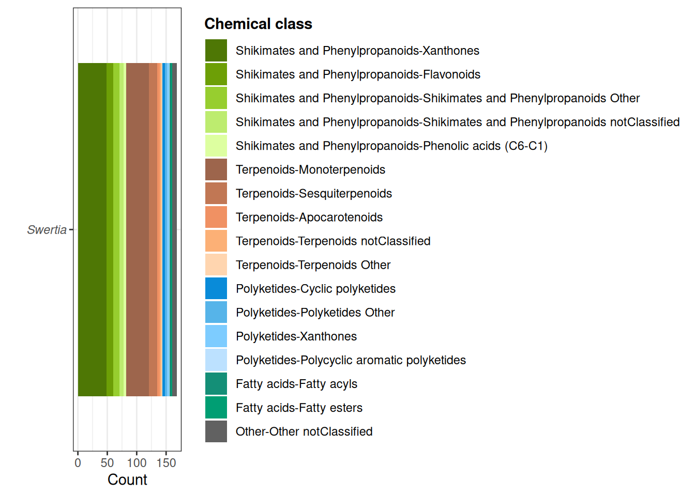
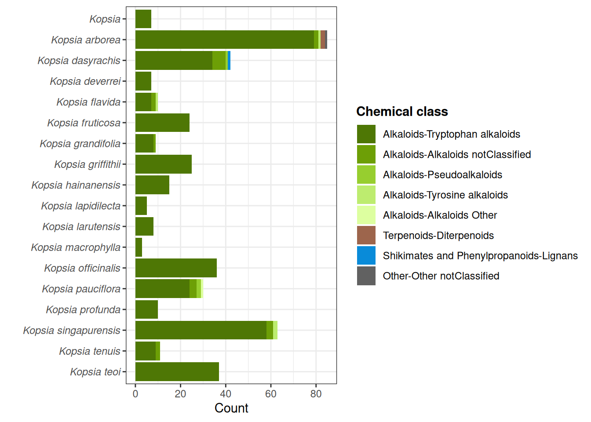
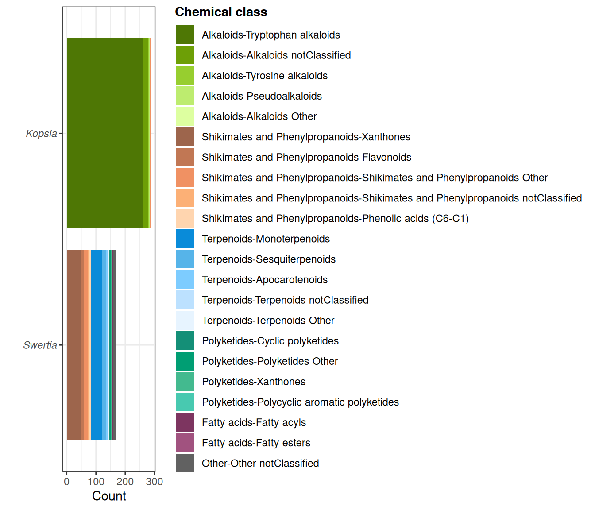

bonus_plots_list <- generate_ids(
taxa = c("Swertia", "Kopsia", "Ginkgo"),
comparison = c("Swertia", "Kopsia"),
no_stereo = TRUE,
filter_ms_conditions = TRUE,
start = "1950",
end = "2025"
)
#> INFO [2025-07-03 17:06:07] A file with the same size is already present. SkippingThis vignette describes some additional bonus helper functions. A lot of it is based on previous work done in the frame of the LOTUS initiative.
Quick overview of the literature
To check (and eventually compare to your own results) what is known in the literature about different organisms:
Compounds found in Swertia
bonus_plots_list$plots$Swertia
Compounds found in Kopsia (per species)
bonus_plots_list$plots$Kopsia_grouped
Comparison
bonus_plots_list$plots$special
We hope you enjoyed using CASCADE and are pleased to hear from you!
For any remark or suggestion, please fill an issue or feel free to contact us directly.